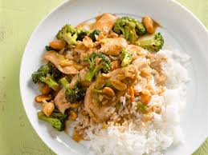

Thai Peanut Chicken

This Thai peanut chicken dish with broccoli is cooked in a spicy sauce. If you like it mild, use less cayenne; if you like it spicy, use more. If you're salt conscious, use low-sodium soy sauce.
Ingredients
- 4 cups water
- 2 cups uncooked white rice
- 3 tablespoons soy sauce
- 2 tablespoons creamy peanut butter
- 2 teaspoons white wine vinegar
- ¼ teaspoon cayenne pepper
- 3 tablespoons olive oil
- 4 skinless, boneless chicken breast halves - cut into thin strips
- 3 tablespoons chopped garlic
- 1 ½ tablespoons chopped fresh ginger roo
- 2 ½ cups broccoli florets
- ¾ cup chopped green onions
- ⅓ cup unsalted dry-roasted peanuts
Directions
- Combine water and rice in a saucepan over medium-high heat; bring to a boil. Reduce heat to low, cover, and simmer until rice is tender and liquid is absorbed, about 20 minutes.
- Meanwhile, stir together soy sauce, peanut butter, vinegar, and cayenne pepper in a small bowl; set aside.
- Heat olive oil in a skillet or wok over high heat. Cook and stir chicken, garlic, and ginger in hot oil until chicken is lightly browned, about 5 minutes. Reduce heat to medium and add broccoli, green onions, peanuts, and soy sauce mixture. Cook, stirring frequently, until broccoli is tender and chicken is cooked through, about 5 minutes.
Want To Try out Some other fancy recipe ? Check Them Out Here: